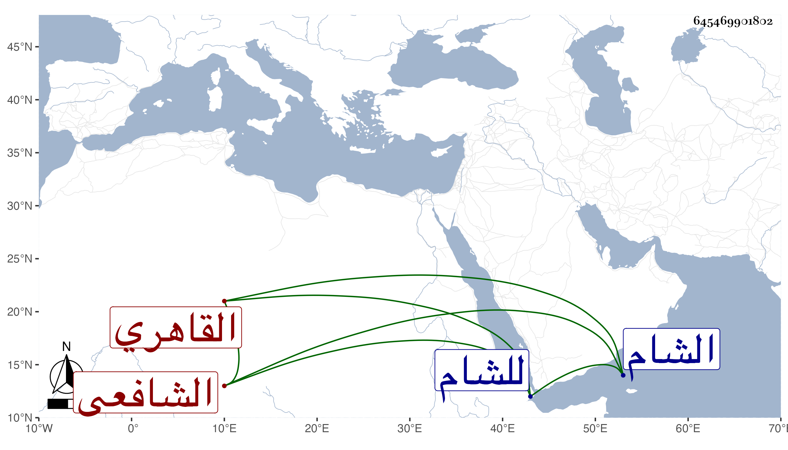

0902Sakhawi.DawLamic.ITO20230111-ara1.EIS1600.645469901802
Biography ID: 645469901802
256
محمد بن محمد بن عبد الرحمن بن عبد الله بن يوسف المحب بن الولوى ابن التقي بن الجمال بن هشام القاهري الشافعي أبوه وجده . ممن نشأ في كنف أبيه فحفظ القرآن وكتبا واشتغل في الفقه وأصوله والعربية وغيرها ومن شيوخه العبادي والتقي الحصني ، وتميز في الفضائل ولكنه لم يتصون بحيث أتلف ما ورثه من أبيه ورغب عن تدريس الفقه بالمنصورية المتلقى له عن أبي السعادات البلقيني وكذا رغب عما كان أعرض عنه سبط شيخنا له من مشيخة خان السبيل فالاول لابن عز الدين البلقيني والثانية للبدر بن القطان وصار إلى املاق زائد حتى أنه سافر إلى الشام وقطنها في ظل ابن الفرفور ونحوه ، وكان قد قرأ على السر المكتوم في الفرق بين المالين المحمود والمذموم وتردد إلي في غير هذا وما حمدت سرعة حركته وطيشه مع ومشاركته في الجملة ، وهو ممن لازم الخيضري لينال فائدة فلم يحصل على كبير شيء وقصارى أمره أنه زوده وهو متوجه للشام بدينار .
